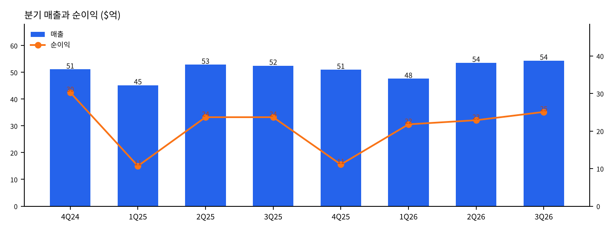
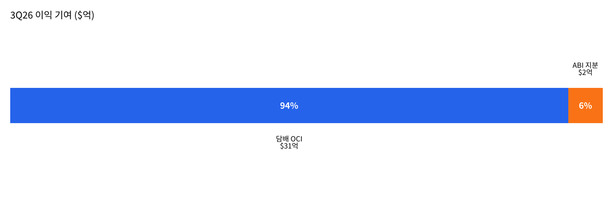
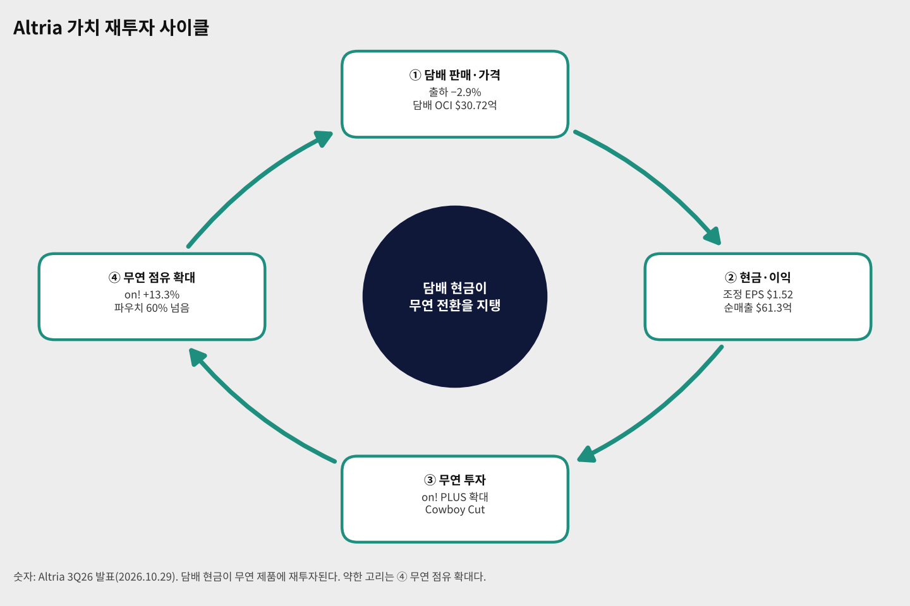

Altria는 담배 판매량이 줄어도 가격을 올려 이익을 지키고, 그 현금을 배당·자사주와 무연 제품에 쓴다.
| 항목 | 내용 |
|---|---|
| 종목 | Altria (MO) · NYSE · 담배 · 버지니아 리치먼드 |
| 최근 분기(3Q26) | 순매출 $61.3억, 조정 EPS $1.52 |
| 핵심 상품 | Marlboro, Basic, on!, on! PLUS, ABI 지분 |
| 직원 수 | 약 5,900명(트레이딩뷰) |
| 멀티플 | PER·PEG·P/S는 08~10 항목 표 참조 |
| 직책 | 인물 | 역할·특징 |
|---|---|---|
| CEO | 살바토레 만쿠소(Sal Mancuso) | 데이터 기반 포트폴리오 전략으로 담배 이익 증가를 설명 |
| CFO | 헤더 뉴먼(Heather Newman) | 가이던스 상향을 발표 |
경영 스타일: 현금 환원 + 무연 전환. 담배에서 나온 현금을 주주에게 돌려주면서 무연 제품 투자를 병행한다.
on!·on! PLUS 파우치 출하가 늘고 있다. 새 향·농도 제품을 매장에 확대한다.
담배 소비 감소를 무연 제품과 AB InBev 지분 수익으로 보완하려 한다.
다음 실적발표는 세 가지 질문에 답하는 자리다.
1. 가격 인상이 물량 감소를 계속 메우나?
2. on!이 구강 제품 이익률을 지키나?
3. 가이던스 상단에 도달하나?
한 줄 판정 규칙: 첫 질문(가격 대 물량)이 유지되면 약한 고리인 ④ 무연 점유 확대는 이익 감소를 메우는 시간을 번다고 본다.
일정: 4Q26 실적 발표는 2027.02.04 예정(트레이딩뷰). 2027 가이던스가 함께 나온다.
| 분기 | 매출 | 순이익 | EPS | 조정 EPS | 특이 사항 |
|---|---|---|---|---|---|
| 4Q24 | $51.1억 | $30.3억 | 1.79 | 1.29 | |
| 1Q25 | $45.2억 | $10.7억 | 0.63 | 1.23 | |
| 2Q25 | $52.9억 | $23.7억 | 1.41 | 1.44 | |
| 3Q25 | $52.5억 | $23.7억 | 1.41 | 1.45 | |
| 4Q25 | $51.0억 | $11.1억 | 0.66 | 1.30 | |
| 1Q26 | $47.6억 | $21.8억 | 1.30 | 1.32 | |
| 2Q26 | $53.6억 | $22.9억 | 1.37 | 1.48 | |
| 3Q26 | $54.4억 | $25.1억 | 1.51 | 1.52 | 담배 출하 −2.9%, Marlboro −6.4%, 가격 인상으로 이익 증가 |
매출은 트레이딩뷰 스캐너의 분기 총매출이라 회사가 발표한 순매출과 다를 수 있다. 조정 EPS는 일회성 항목을 뺀 값이다. 매출·순이익·EPS(GAAP 희석)는 트레이딩뷰 스캐너, 조정 EPS는 트레이딩뷰 실적 페이지의 Reported 값이다. 분기 정렬은 오래된 분기→최신이다.

흐름 요약: 최근 분기 매출은 $54.4억로 전년 동기 $52.5억 대비 +3.6%, 순이익은 $25.1억(전년 $23.7억)다. 최근 4분기 GAAP EPS는 $4.84, 조정 EPS는 $5.62다.
| 항목 | 내용 | 3Q26 금액 | 비고 |
|---|---|---|---|
| 담배 조정 OCI | Marlboro 등 | $30.72억 | +3.9% |
| ABI 지분 수익 | 조정 지분 이익 | $1.91억 | +21.7% |

이익의 대부분이 미국 담배에서 나온다.
Altria는 성인 흡연자에게 담배 대체 제품을 제공하는 방향으로 사업을 바꾸는 것을 목표로 한다.
| 축 | 내용 |
|---|---|
| 핵심 | 미국 담배 |
| 무연 | on!·on! PLUS |
| 환원 | 9개월 배당 $53억·자사주 $7.4억 |

| 이동평균 | 값 | 종가 대비 | 위치 |
|---|---|---|---|
| 5일선 | $77.17 | -3.3% | 종가 아래 |
| 20일선 | $76.42 | -2.4% | 종가 아래 |
| 50일선 | $72.86 | +2.4% | 종가 위 |
| 100일선 | $71.20 | +4.8% | 종가 위 |
| 200일선 | $69.92 | +6.7% | 종가 위 |
52주 고가 $79.97(2026-11-16)·저가 $54.70(2026-01-07) 범위에서 종가 $74.59는 50일선, 100일선, 200일선을 웃돌고 5일선, 20일선은 밑돈다.
| 규칙 | 기준 | 현재 값 | 신호 |
|---|---|---|---|
| 장기 추세 필터 | 종가 vs 200일선 | $74.59 > $69.92 | 매수 |
| 중장기 교차 | 50일선 vs 200일선 | $72.86 > $69.92 | 매수 |
| 단기 교차 | 20일선 vs 50일선 | $76.42 > $72.86 | 매수 |
| 돈키언 채널 | 55일 고가 $79.97 / 저가 $65.78 | 중간값 $72.88 위 | 매수 |
| 1개월 모멘텀 | 21거래일 수익률 | +1.0% (기준 $73.83) | 매수 |
| 3개월 모멘텀 | 63거래일 수익률 | +12.9% (기준 $66.09) | 매수 |
| 6개월 모멘텀 | 126거래일 수익률 | +1.2% (기준 $73.71) | 매수 |
| 12개월 모멘텀 | 252거래일 수익률 | +26.6% (기준 $58.94) | 매수 |
| 종합 (8개 평균) | +1.00 | 강한 매수 |
해석: 매수 신호 8개(장기 추세 필터, 중장기 교차, 단기 교차, 돈키언 채널, 1개월 모멘텀, 3개월 모멘텀, 6개월 모멘텀, 12개월 모멘텀), 매도 신호 0개(없음). CTA 점수 +1.00(강한 매수). 14일 ATR $1.69 (2.3%), 52주 고가 $79.97 · 저가 $54.70.
| 가격 | 기준 | 무엇이 바뀌나 |
|---|---|---|
| $79.97 | 55일 고가 | 돌파 시 채널 상단 갱신 |
| $73.83 | 1개월 모멘텀 기준가 | 종가가 이 가격 위면 1개월 신호 매수 |
| $73.71 | 6개월 모멘텀 기준가 | 종가가 이 가격 위면 6개월 신호 매수 |
| $72.88 | 돈키언 중간값 | 55일 채널 중간값 위/아래로 신호가 바뀜 |
| $69.92 | 200일선 | 종가가 이 선 위/아래인지로 장기 추세 신호가 바뀜 |
| $66.09 | 3개월 모멘텀 기준가 | 종가가 이 가격 위면 3개월 신호 매수 |
| $65.78 | 55일 저가 | 이탈 시 채널 하단 갱신 |
| $58.94 | 12개월 모멘텀 기준가 | 종가가 이 가격 위면 12개월 신호 매수 |
가격 수준은 신호가 바뀌는 기준선일 뿐 진입·청산 가격 제안이 아니다. 20일/50일 교차는 이동평균 자체가 움직여 단일 가격으로 표시하지 않았다. 일봉·주봉은 종가 기준 직접 계산(고저 데이터 미사용)이다.
| 악재 요인 | 내용 | 강도 |
|---|---|---|
| 담배 감소 | 출하 −2.9%, Marlboro −6.4% | 높음 |
| 구강 마진 | 구강 OCI 마진 −2.8%p | 중간 |
| 경제 불확실성 | 성인 소비자 부담, 규제 | 중간 |
| 티커 | 회사 | PER(TTM) | PEG | P/S | EPS 성장(YoY) |
|---|---|---|---|---|---|
| MO | Altria | 13.3배 | 3.42 | 5.99배 | +4% |
| PM | Philip Morris International | 28.1배 | 1.18 | 7.05배 | +24% |
| KO | Coca-Cola | 28.9배 | 2.37 | 8.28배 | +12% |
| PEP | PepsiCo | 17.8배 | 0.35 | 1.98배 | +51% |
| MDLZ | Mondelez | 20.7배 | 1.13 | 2.14배 | +19% |
비교 결론: Altria의 PER 13.3배는 Philip Morris·Coca-Cola·PepsiCo·Mondelez보다 낮다. PEG 3.42는 Philip Morris(1.18)·Coca-Cola(2.37)·Mondelez(1.13)·PepsiCo(0.35)보다 높다.
현금·부채는 트레이딩뷰 스캐너 값이다. 부채가 현금보다 훨씬 크다.
| 지표 | 값 | 출처 | 해석 |
|---|---|---|---|
| 현금·단기투자 | $27억 | 트레이딩뷰 스캐너(최근 분기) | |
| 총부채 | $241억 | 트레이딩뷰 스캐너(최근 분기) | |
| 순부채(부채−현금) | $214억 | 내 계산 | 현금 대비 부채 부담 |
| 잉여현금흐름(TTM) | $91억 | 트레이딩뷰 스캐너 | |
| TTM 매출 | $207억 | 트레이딩뷰 스캐너 |
| 기준 | 매출 | P/S | 비고 |
|---|---|---|---|
| 내 계산(종가 ÷ 최근 4분기 매출 합계) | $206.6억 | 5.99배 | 시총은 정렬용 데이터에서만 사용 |
| 동종(트레이딩뷰) | – | PM 7.05배 · KO 8.28배 · PEP 1.98배 · MDLZ 2.14배 | 11.19 |
해석: 배당·자사주로 현금 대부분을 쓰는 구조라 부채는 거의 줄지 않는다(내 해석).
EBITDA는 영업활동의 현금 창출력을 보는 지표이고, PEG는 PER을 EPS 성장률로 나눈 값이다. EBITDA·FCF는 트레이딩뷰 TTM 값이다.
| 지표 | 값 | 산출 |
|---|---|---|
| EBITDA(TTM) | $157억 | 트레이딩뷰 스캐너 |
| EBITDA 마진 | 75.8% | EBITDA ÷ TTM 매출(내 계산) |
| FCF 마진 | 44.0% | FCF ÷ TTM 매출(내 계산) |
| PER(GAAP TTM) | 15.4배 | $74.59 ÷ $4.84 |
| PER(조정 TTM) | 13.3배 | $74.59 ÷ $5.62 |
| 방식 | PER | EPS 성장률 | PEG | 판정 |
|---|---|---|---|---|
| 조정 EPS (TTM $5.62) | 13.3배 | +4% ($5.41 → $5.62) | 3.42 | 기준 초과 |
| GAAP EPS (TTM $4.84) | 15.4배 | -8% ($5.24 → $4.84) | 산출 불가 | 참고 |
판정: 조정 EPS 기준 PEG 3.42 → 1.0 초과 PEG 기준은 1.0 이하 투자 적격, 0.5 이하 적극 매수다. EPS 성장률은 최근 4분기 EPS 합계를 직전 4분기 합계와 비교한 값(내 계산)이고, 일회성 항목이 있으면 조정 EPS 행을 함께 본다.

Altria의 사이클: 담배 이익이 무연 제품에 재투자돼 점유율을 키우고, 무연 매출이 줄어드는 담배 이익을 다시 보완하는 순환이다.
| 고리 | 현재 숫자·근거 |
|---|---|
| ① 담배 판매·가격 | 3Q26 담배 출하 −2.9% · 담배 조정 OCI $30.72억(+3.9%) |
| ② 현금·이익 | 조정 EPS $1.52(+4.8%) · 순매출 $61.32억 |
| ③ 무연 투자 | on! PLUS 신제품 확대 · 투자 금액은 보고서에 없음(내 해석) |
| ④ 무연 점유 확대 | on! 출하 +13.3% · 니코틴 파우치 구강 범주 60% 넘음 |
사이클의 특징: 약한 고리는 ④ 무연 점유 확대다(구강 OCI 마진 −2.8%p). "(내 해석)"은 보고서 수치가 아닌 해석이다.